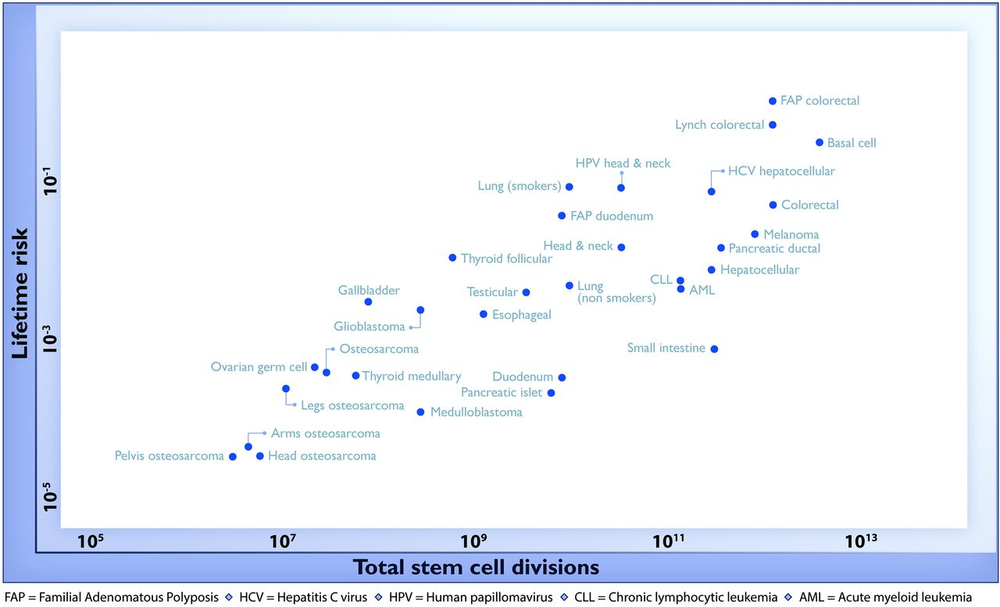

7 Linear regression
One of the most common ways of either fitting data, or if you want to put it in a fancier way, train a machine learning model, is called linear regression. This starts with a data set that has two different variables and pairs of observations of each, and produce a linear model that uses one variable (called explanatory) to predict the other (called response). Graphically speaking, the goal is to plot a line on a scatterplot that best fits the data (in one variable).
Though it is generally not possible to produce an exact fit for more than two observations, there is a method to calculate the closest linear model, called least-squares fitting. We will develop some fundamental tools from linear algebra to do this calculation, and then talk about the underlying assumptions and what they mean for applicability of linear regression.
7.0.1 List of terms and concepts
- Solving linear equations
- Matrix inverse
- Least-squares data fitting
- Explanatory vs. response variables and supervised learning
- Covariance and correlation
- Goodness of fit and R-squared
- Polynomial regression
- Residuals and assumptions of linear regression
7.1 Systems of linear equations
As one goes through life, sometimes one has to solve a set of linear equations, that have multiple variables (let’s call them \(a\) and \(b\)) and the same number of equations that they need to satisfy with constant coefficients. For example, here is a system of two linear equations:
\[ 2a - b = -3 \\ a + b = 1 \]
where we want to find \(a\) and \(b\) that satisfy both equations. This can be written as a matrix equation, with matrix \(M\) containing the coefficients on the left hand side and the vector \(\vec v\) containing the two coefficients on the right hand side, and the vector \(\vec a\) containing the unknown variables \(a\) and \(b\):
\[ \begin{pmatrix} 2 & -1 \\ 1 & 1 \end{pmatrix} \times \begin{pmatrix} a \\ b\end{pmatrix} = \begin{pmatrix}-3 \\1\end{pmatrix} \\ M \vec a = \vec v \]
Written as a single linear equation, it is tempting to “divide” both sides by \(M\) and thus solve for the vector \(\vec a\), but matrices cannot be reciprocated like numbers. Linear algebra provides a way of doing this correctly.
In order to get rid of the matrix \(M\) on one side of the equation, one can multiply it by another matrix called its inverse.
For a square (\(n\) by \(n\)) matrix \(M\) the inverse matrix \(M^{-1}\) (also \(n\) by \(n\)) satisfies the following conditions: \(M^{-1} \times M = M \times M^{-1} = I\), where \(I\) is the \(n\) by \(n\) identity matrix.
Example: For the matrix above, the inverse matrix is (check for yourself)
\[ M^{-1} = \begin{pmatrix}1/3 & 1/3 \\ -1/3 & 2/3\end{pmatrix} \]
In general, finding the inverse of a matrix is best left to computers. However, for a 2 by 2 matrix, there is an explicit formula for an inverse:
\[ M = \begin{pmatrix} \alpha & \beta \\ \gamma & \delta \end{pmatrix} \\ M^{-1} = \frac{1}{\det(M)} \begin{pmatrix} \delta & -\beta \\ -\gamma & \alpha \end{pmatrix} \]
where the determinant \(\det(M) = \alpha \delta - \beta \gamma\). Note that the division by the determinant of \(M\) in front of the matrix means every element of \(M\) is divided by determinant (as we see in the example above, where every element is divided by 3).
Once we have found the inverse of a matrix, we can solve the linear equation by multiplying both sides by the inverse:
\[ M^{-1} \times M \times \vec a = V^{-1} \times \vec v \\ \vec a = M^{-1} \times \vec v \]
In the example above, we multiply the vector \(\vec v\) by the inverse and find the solution: \((a,b) = (-2/3, 5/3)\) (you can check that it works by plugging it into the original equations)
7.1.1 invertibility of matrices
It is useful to consider the geometric meaning of systems of linear equations. In two dimensions, as in the above example, each equation can be represented by a line in the plane. The solution to the two equations is the intersection of the two lines. The intersection is guaranteed to exist if the two lines are not parallel. If they are indeed parallel, then they either do not intersect at all, so there is no solution, or they overlap completely, in which case there are infinitely many solutions.
A similar geometric interpretation is true in higher dimensions. In three dimensions, each linear equation represents a plane, and as long as no two planes are parallel, there is only one point in which they intersect. But if two planes have the same direction, again, there is either no solution, or infinitely many (a line or plane of solutions). In higher dimensions, a solution is the intersection of \(n\) hyper-planes, and again, for a unique solutions to exist, no two hyper-planes can be parallel.
We saw the algebraic and geometric approach to solving systems of linear equations. In the algebraic solution, we can multiply by the inverse of the matrix, but we did not specify when it exists. Algebraically speaking, this can be determined from the determinant of the matrix, as in the formula for the inverse of a 2 by 2 matrix. This is the reason for the following fundamental result:
Invertibility property: For a square (\(n\) by \(n\)) matrix \(M\), an inverse matrix \(M^{-1}\) (also \(n\) by \(n\)) exists if any only if the determinant of \(M\) is not zero.
Geometrically speaking, a determinant of zero indicates that the intersection of the lines (or hyperplanes) is not a single point or speaking mathematically, they are not linearly independent. If that is the case, as we said above, there is not unique solution to the system of equations: there are either none, or infinitely many solutions.
7.2 Fitting a line to data
One of the most common questions in data science (or any science) is to describe a relationship between two numeric variables. Often, one is seen as the potential cause and the other as the effect, and they are called the explanatory and response variables, respectively. For example, {numref}fig-cancer-risk plots multiple data points of the cancer risk for different types of tissues plotted on the y-axis (response) as a function of the total number of cell divisions plotted on the x-axis (explanatory).

The question is: can the relationship between the variables be described by a linear function \(y = ax + b\)? And if so, how do you choose the best slope \(a\) and intercept \(b\)?
The answer is straightforward if we only have two data points: we can use the exact solution that we described in the previous section. For example, if the two data points are \((-1, -2), (5, 4)\), then the line that passes through both points must satisfy both equations below, with \(a\) and \(b\) being the slope and the intercept:
\[ -a + b = -2 \\ 5a + b = 4 \]
To find the solution for \(a\) and \(b\), we take the inverse of the matrix of coefficients \(M\) and multiply it by the vector \(\vec v\) on the left hand side:
\[ M = \begin{pmatrix} -1 & 1 \\ 5 & 1\end{pmatrix}; \vec v = \begin{pmatrix} -2 \\ 4 \end{pmatrix}\\ M^{-1} \times \vec v = \frac{1}{-6} \begin{pmatrix} 1 & -1 \\ -5 & -1 \end{pmatrix} \times \begin{pmatrix} -2 \\ 4 \end{pmatrix} = \begin{pmatrix} 1\\ -1 \end{pmatrix} \]
This means that a line with slope 1 and intercept -1 will pass through these two points.
But of course two data points is a very small amount of data to build a model. To make it just a bit more interesting, let’s add one more data point, so our data set is: \((-1, -2), (5, 4), (2,7)\). How can we find a line to fit those points?
Bad idea: Take two points and find a line, that is the slope and the intercept, that passes through the two. It should be clear why this is a bad idea: we are arbitrarily ignoring some of the data, while perfectly fitting two points.
So how do we use all the data? Let us write down the equations that a line with slope \(a\) and intercept \(b\) have to satisfy in order to fit our data points:
\[ -a + b = -2 \\ 5a + b = 4 \\ 2a + b = 7 \]
Let us write it in matrix form again:
\[ \begin{pmatrix} -1 & 1 \\ 5 & 1 \\ 2 & 1\end{pmatrix} \times \begin{pmatrix} a \\b\end{pmatrix} = \begin{pmatrix} -2 \\ 4 \\ 7 \end{pmatrix} \\ M \times \begin{pmatrix} a \\ b\end{pmatrix} = \vec v \]
This system has no exact solution, since there are three equations and only two unknowns. We need to find \(a\) and \(b\) such that they provide the best fit to the data, not the perfect solution. To do that, we need to define how to measure goodness of fit.
7.2.1 minimizing the sum of residuals
The most common approach to determine the goodness of fit is to subtract the predicted values of \(y\) from the data, as follows: \(e_i = y_i - (mx_i + b)\). However, if we add it all up, the errors with opposite signs will cancel each other, giving the impression of a good fit simply if the deviations are symmetric. A more reasonable approach is to take absolute values of the deviations before adding them up. This is called the total deviation, for \(n\) data points with a line fit:
\[ TD = \sum_{i=1}^n | y_i - mx_i - b | \]
Mathematically, a better measure of total error is a sum of squared errors, which also has the advantage of adding up nonnegative values, but is known as a better measure of the distance between the fit and the data (think of Euclidean distance, which is also a sum of squares):
\[ SSE = \sum_{i=1}^n ( y_i - mx_i - b )^2 \]
To calculate the best-fit slope and intercept, we first need to define the variance and covariance of a data set:
The variance of a data set \(X\) with \(n\) data points is the following sum, where \(\bar X\) is the mean of the data:
\[ Var(X) = \frac{1}{n-1} \sum_{i=1}^n (\bar X - x_i)^2 \] The covariance of a data set of pairs of values \((X,Y)\) is the sum of the products of the corresponding deviations from their respective means:
\[ Cov(X,Y) = \frac{1}{n-1} \sum_{i=1}^n (x_i - \bar X) (y_i -\bar Y) \]
Intuitively, this means that if two variables tend to deviate in the same direction from their respective means, they have a positive covariance, and if they tend to deviate in opposite directions from their means, they have a negative covariance. In the intermediate case, if sometimes they deviate together and other times they deviate in opposition, the covariance is small or zero. For instance, the covariance between two independent random variables is zero.
It should come as no surprise that the slope of the linear regression depends on the covariance, that is, the degree to which the two variables deviate together from their means. If the covariance is positive, then for larger values of \(x\) the corresponding \(y\) values tend to be larger, which means the slope of the line is positive. Conversely, if the covariance is negative, so is the slope of the line. And if the two variables are independent, the slope has to be close to zero. The actual formula for the slope of the linear regression is:
\[ a = \frac{Cov(X,Y)}{Var(X)} \]
To find the intercept of the linear regression, we make use of one other property of the best fit line: in order for it to minimize the SSE, it must pass through the point \((\bar X, \bar Y)\). Again, I will not prove this, but note that the point of the two mean values is the central point of the “cloud” of points in the scatterplot, and if the line missed that central point, the deviations will be larger. Assuming that is the case, we have the following equation for the line: \(\bar Y = a\bar X + b\), which we can solve for \(b\):
\[ b = \bar Y - \frac{Cov(X,Y) \bar X}{Var(X)} \]
The parameters of the best-fit line can be calculated from the means, variances, and covariance of the two variable data set. But where did the formulas come from?
We want find the slope and intercept (\(a\) and \(b\)) which result in the lowest sum of squared errors. This approach is generally known as least squares fitting, and in the case of fitting a line, it is called linear regression. One way to find the values that minimize the sum of squared errors is to find the derivatives of SSE with respect to \(a\) and \(b\) and set them to 0:
\[ \frac {\partial SSE}{\partial a} = \sum_{i=1}^n -2x_i( y_i - ax_i - b ) = 0 \\ \frac {\partial SSE}{\partial b} = \sum_{i=1}^n -2( y_i - ax_i - b ) = 0 \]
Re-write this with the \(y_i\)s on the right hand side:
\[ a \sum_{i=1}^n x_i^2 + b \sum_{i=1}^n x_i = \sum_{i=1}^n x_i y_i \\ a \sum_{i=1}^n x_i + b \sum_{i=1}^n 1 = \sum_{i=1}^n y_i \]
This is now a linear system of equations, just as we started with. Turns out, there is compact way of representing this equation in matrix notation. Using the notation from the example above, let the matrix \(M\) contain a column of \(x\) values from the data, and a column of ones, and the vector \(\vec y\) contain a column of \(y\) values of the data:
\[ M = \begin{pmatrix} x_1 & 1 \\... & ... \\x_n & 1\end{pmatrix}; \; \vec y = \begin{pmatrix} y_1 \\... \\y_n \end{pmatrix} \]
Then the equations above can be written as the following linear algebra equation, and solved using matrix inverse:
\[ M^t \times M \times \begin{pmatrix} a \\ b\end{pmatrix} = M^t \times \vec y \\ \begin{pmatrix} a \\ b \end{pmatrix} = (M^t \times M)^{-1} \times M^t \times \vec y \]
There is a linear algebra fact that the 2 by 2 matrix \(M^t \times M\) is invertible so long as the columns of \(M\) are linearly independent. In this case this means as long as the \(x\) values of the data are not all the same, we can find a least-squares linear fit to a set of \(n\) data points. If you write down the solution for \(a\) and \(b\) as sums of all the components, you will obtain the formulas that were presented above.
One essential measure of the quality of linear regression is correlation, which is a measure of how much variation in one random variable corresponds to variation in the other. If this sounds very similar to the description of covariance, it’s because they are closely related. Essentially, correlation is normalized covariance, made to range between -1 and 1. Here is the definition:
The (linear or Pearson) correlation of a data set of pairs of data values \((X,Y)\) is:
\[ r = \frac{Cov(X,Y)}{\sqrt{{Var(X)}{Var(Y)}}} = \frac{Cov(X,Y)}{\sigma_X \sigma_Y}\]
If the two variables are identical, \(X=Y\), then the covariance becomes its variance \(Cov(X,Y) = Var(X)\) and the denominator also becomes the variance, and the correlation is 1. This is also true if \(X\) and \(Y\) are scalar multiples of each other, as you can see by plugging in \(X= cY\) into the covariance formula. The opposite case if \(X\) and \(Y\) are diametrically opposite, \(X = -cY\), which has the correlation coefficient of -1. All other cases fall in the middle, neither perfect correlation nor perfect anti-correlation. The special case if the two variables are independent, and thus their covariance is zero, has the correlation coefficient of 0.
This gives a connection between correlation and slope of linear regression:
\[ a = r \frac{\sigma_Y}{\sigma_X} \]
Whenever linear regression is reported, one always sees the values of correlation \(r\) and squared correlation \(r^2\) displayed. The reason for this is that \(r^2\) has the meaning of the the fraction of the variance of the dependent variable \(Y\) explained by the linear regression \(Y=aX+b\).

{kind=link}
There are, as usual, a couple of cautions about relying on the correlation coefficient First, just because there is no linear relationship, does not mean that there is no other relationship. {numref}fig-corr-examples shows some examples of scatterplots and their corresponding correlation coefficients. What it shows is that while a formless blob of a scatterplot will certainly have zero correlation, so will other scatterplots in which there is a definite relationship (e.g. a circle, or a X-shape). The point is that correlation is always a measure of the linear relationship between variables.
Second cautionary tale is well known, as that is the danger of equating correlation with a causal relationship. There are numerous examples of scientists misinterpreting a coincidental correlation as meaningful, or deeming two variables that have a common source as causing one another. It cannot be repeated often enough that one must be careful when interpreting correlation: a weak one does not mean there is no relationship, and a strong one does not mean that one variable causes the variation in the other.
7.3 assumptions of linear regression
The simple formulas for slope, intercept, and standard deviation are only valid under certain conditions. The classic linear regression presented above relies on the following assumptions:
- the two variables have a linear relationship
- the measurements are all independent of each other
- there is no noise in the measurements of the independent variable
- the noise in the measurements of the dependent variable is normally distributed with the same variance
In reality, each data measurement has a random component, that we can call noise, resulting from experimental error, environmental variation, etc, and different measurements may have different levels of noise (standard deviation). One can estimate the error for a measurement, for instance by repeating the experiment several times, and estimating the standard deviation of the measurement random variable (we will not get into how to do this until the third quarter). It is important to account for this uncertainty in the data, since a measurement which is all over the place must carry less weight than one which is solid. A proper mathematical way of doing this is by defining a different function to measure the goodness of fit, known as the chi-squared function:
\[ \chi^2 = \sum_{i=1}^n \frac{( y_i - ax_i - b )^2 }{\sigma_i^2} \] where \(\sigma_i\) is the standard deviation of the \(i\)-th data point. Given all this information, we can find a solution analogous to the one found in the previous section. The only modification is to divide the matrices by the standard deviation \(\sigma_i\):
\[ M = \begin{pmatrix} x_1/\sigma_i & 1/\sigma_1 \\... & ... \\x_n/\sigma_n & 1/\sigma_n \end{pmatrix} \\ \vec y = \begin{pmatrix} y_1/\sigma_1 \\... \\y_n /\sigma_n \end{pmatrix} \]
Then the least squares solution is found by the same formula as above, but here we have accounted for the experimental uncertainty:
\[ \begin{pmatrix} a \\b\end{pmatrix} = (M^t \times M)^{-1} \times M^t \times \vec y \]
7.4 linear least squares for polynomial fitting
Fitting data sets is not restricted to linear functions. One simple extension is extension is to higher degree polynomials. Let us consider a quadratic function: \(y = ax^2 + bx + c\). By analogy with the equations for fitting a linear function, we have a set of \(n\) equations, one for each data point:
\[ ax_1^2 + bx_1 + c = y_1 \\ ax_2^2 + bx_2 + c = y_2 \\ .... \\ ax_n^2 + bx_n + c = y_n \]
Thus, we can define the matrix \(M\) for the least-squares quadratic fit, along with the same vector \(\vec y\) as follows:
\[ M = \begin{pmatrix} x_1^2 & x_1 & 1 \\... & ... & ... \\x_n^2 & x_n & 1\end{pmatrix}; \; \vec y = \begin{pmatrix} y_1 \\... \\ y_n\end{pmatrix} \]
and find the best fit parameters for the quadratic function:
\[ \begin{pmatrix}a \\b \\ c \end{pmatrix} = (M^t \times M)^{-1} \times M^t \times \vec y \]
It is straightforward to extend this to higher order polynomials, just by adding columns of higher powers of \(x\) data to the matrix \(M\). The basic structure of the solution remains the same.
Another important concern is about the appropriate number of parameters in a fit for a particular data set. It is clear that adding more parameters results in better fit, but at some point the number of parameters is too large, and “over-fitting” becomes as issue. Obviously, if one uses the same number of parameters as data points, one can obtain a perfect fit that has little predictive power - it just matches the given data. Deciding at what point adding more parameters is not productive is a difficult question, which can be addressed by various statistical methods that are outside of the scope of the course.